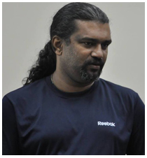

About HITB CyberWeek 2020 Virtual Edition
HITBSecConf or the Hack In The Box Security Conference is an annual must attend event in the calendars of security researchers and professionals around the world. Held annually in Kuala Lumpur, Malaysia and Amsterdam in The Netherlands, HITBSecConf is a platform for the discussion and dissemination of next generation computer security issues. Our events routinely feature two days of trainings and a two-day multi-track conference featuring cutting-edge hardcore technical talks delivered by some of the most respected names in the computer security industry. HITBSecConf is a place where ideas are exchanged, talent discovered and genius celebrated.
HITB CyberWeek 2020 Virtual Edition, November 18 & 19, 2020
Register for HITB CyberWeek: Register
Venue : Online.
CTF : Red Team vs Blue team CTF
Event URL: https://cyberweek.ae/2020/red-team-village
Submit CFP now: https://cfp.hackinthebox.org/
CyberWeek Schedule: https://cyberweek.ae/2020/agenda/
Join Discord: https://redteamvillage.org/discord
Village and CTF Sponsor
HITB CyberWeek Village Agenda:
Talks on Red teaming tactics, Offensive cyber security and attack simulation
Training/Workshop on Adversarial attack simulation, Red teaming and Offensive cyber security
Live Interaction with the speakers and the community
Join Discord: https://redteamvillage.org/discord
Adversaries/Red Team VS Defenders/Blue Team - CTF (Capture the flag competition)
CTF schedule: 10:00, 18th November to 17:00, 19th November
HITB CyberWeek 2020 Red Team Village | Day 1: 18th November, 2020
18th November 13:00 to 15:00 GST [GMT +4]
Workshop: Penetration Testing of ECU (Red Team Version)
Arun Mane, Founder and Director, Amynasec Labs LLP
Abstract: “Connected” cars is a buzzword nowadays. As well, the internals of the cars is connected too. The significance may vary though, per se, scanning, ignition control, infotainment, etc. With the number of such joints in the connectivity, there well is a set of threats lurking over this whole mobile machine (car). Car theft is nowadays a part of daily crime news. The car networks are prevailing to be of utter importance due to their usability, and hence the various methods and frequency of attacks too. Considering the state of the present threat, understanding car network security is of prime importance. The session will make available attendees understand and perform such methods and attacks as well will make them think about the potential ways to secure those networks. The logical progression of the workshop deliverables: · Briefing of ECU · Briefing of Vehicle Networks · Briefing of Vehicle Protocols · Understanding and briefing CANBUS protocols · Briefing of CANBUS frame · Briefing of CAR hacking Tools · Reverse Engineering of CANBUS – Identify the Arbitration ID of specific vehicle event · Replay the CANBUS message · Sending Forged CANBUS messages · DOS Attack on CANBUS network · Introduction to Vehicle Diagnostics List of Components · Instrument Cluster · ECU · Harnesser · Hardware tool for CanBus testing Key Takeaways: · Pre-built VM containing tools for security assessment of car networks. · Exposure to vehicle protocol threats. · An understanding of doing vehicle security modules. · Significance and hands-on usage experience of various tools in this specific flavor of security. In this workshop, I Will demonstrate and explain each and every aspect online, it's not a pre-recorded session. As we have an online studio, With the help of CAMERA and required setup this workshop will be fun and more interactive.
About the speaker: Arun Mane is a Founder and Director of Amynasec labs LLP which is specialized in Vehicle/Iot/ICS and he also Hardware, IOT and ICS Security Researcher. His areas of interest are Hardware Security, SCADA, Automotive security, Fault Injection, RF protocols and Firmware Reverse Engineering. He also has experience in performing Security Audits for both Government and private clients. He has presented a talk at the Nullcon 2016, 2017, 2018 Goa, GNUnify 2017, DefCamp 2017, 2018, 2019 Romania, BsidesDelhi 2017, 2019, c0c0n x 2017, 2019, EFY 2018, x33fcon 2018, 2019,2020 BlackHat USA 2018, Defcon USA 2018, OWASP Seasides 2019 Goa, Hactivity 2019 Budapest, Rootcon 2019 Philippines. Also, Trainer for Practical Industrial Control Systems (ICS) hacking training, delivered in x33fcon 2018, 2019, HIP 2018 and also delivered training for IoT hacking in HITB 2017, HIP 2017, BlackHat Asia 2018 and private clients in London, Australia, Sweden, Netherlands etc. He is an active member of null open community.
Panel discussion: Pre-empting attacks - Relevance of red teaming in enterprises
18th November 15:00 to 16:00 GST [GMT +4]
Manu Zacharia,President at ISRA, Founder of c0c0n International Hacking & Information Security Conference
About Speaker: Information Security evangelist with more than 23 years of professional experience. CEO – HackIT Technology and Advisory Services (Singapore, India, UAE) - www.hackit.co. External Consultant to Kerala State IT Mission / Computer Emergency Response Team (Kerala) – CERT-K from Feb 2016 to Jul 2016. Awarded the prestigious Microsoft Most Valuable Professional - MVP award consecutively for four years (2009, 2010, 2011 and 2012) in Enterprise Security stream. Also honored with the prestigious Asia Pacific Information Security Leadership Achievements Award for 2010 from (ISC)² under Senior Information Security Professional Category. Awarded the Nullcon Black Shield Awards for 2014 under the Community Star category for contribution to community in terms of knowledge sharing, administration, communication, proliferation. Founder of c0c0n International Hacking & Information Security Conference and also Information Security Day Initiatives.
18th November 16:00 to 17:00 GST [GMT +4]
Talk 1: Zero trust networks: Opportunities and challenges for red team Ops
Dan Levy, Senior Manager at EY Israel Advanced Security Center.
Abstract: Work from home is on the rise (thanks COVID), and with it, proponents of the zero-trust model are also gaining in popularity. But what does this entail for red team operations? What will hacking enterprises look like in the upcoming few years? We'll review together major trends surrounding cyber security in the zero-trust era - and not marketing concepts, buzz words or academic theory. This talk will look at the future of network security, how our favorite vendors are aligning their tool stack for 0-trust security, but also the up and rising start-ups that have already raised millions of $ to help enterprises implement zero trust.
About Speaker: Dan is a senior manager from EY's advanced security center in Israel, where he specialises in offensive security and automation projects. I overlook advanced technical projects in the fields of web/mobile/network/cloud security as well as lead large scale cyber security programs for global corporations. His professional engagements include - Led the development and deployment of automation solution to accelerate vulnerability management processes and align with risk profile; drastically reducing manual work of InfoSec team and number of high-risk vulnerabilities in the network.- Managing large scale Attack & Pen programs global companies, effectively assessing the security of hundreds of systems on a yearly basis.- Coordinating and leading “Purple Team” war game attack simulations, providing client with holistic visibility of its threat detection and incident response capabilities.At EY, I’ve advised governments, major financial institutions, Media & Entertainment corporations and technology companies in reducing cyber security risk.
18th November 17:00 to 18:00 GST [GMT +4]
Talk 5: Evolution of Offensive Security - it was always about providing business value
Jorge Orchilles, CTO - SCYTHE
About Speaker: Jorge Orchilles is the Chief Technology Officer of SCYTHE and co-creator of the C2 Matrix project. He is a SANS Certified Instructor and the author of Security 564: Red Team Exercises and Adversary Emulation. He was a founding member of MITRE Engenuity Center of Threat-Informed Defense. He is a Fellow at the Information Systems Security Association (ISSA) and National Security Institute. Prior, Jorge led the offensive security team at Citi for over 10 years. He also co-authored Common Vulnerability Scoring System (CVSS) and A Framework for the Regulatory Use of Penetration Testing in the Financial Services Industry, and author of Microsoft Windows 7 Administrator’s Reference. Jorge holds post-graduate degrees from Stanford and Florida International University in Advanced Computer Security & Master of Science. Jorge speaks English, Spanish, and Portuguese, in decreasing levels of fluency. When he’s not hacking, teaching, or writing, you’ll find him watching and playing soccer.
About Speaker: Bryson is the Founder of SCYTHE, a start-up building a next generation attack emulation platform, and GRIMM, a boutique cybersecurity consultancy, and Co-Founder of the ICS Village, a non-profit advancing awareness of industrial control system security. He is a Senior Fellow for Cybersecurity and National Security at R Street and the National Security Institute and an Advisor to the Army Cyber Institute and DHS/CISA. Prior, Bryson led an elite offensive capabilities development group. As a U.S. Army Officer, he served as a Battle Captain and Brigade Engineering Officer in support of Operation Iraqi Freedom before leaving the Army as a Captain. Bryson received his Bachelor of Science in Computer Science with honors from the United States Military Academy at West Point. He holds a Master’s Degree in Telecommunications Management from the University of Maryland, a Master’s in Business Administration from the University of Florida, and completed graduate studies in Electrical Engineering and Computer Science at the University of Texas.
Abstract: Celebrating 15 Years of Security Weekly means we should go through the evolution of offensive security/ethical hacking. Where did this all start, where are we now, and where are we going? This talk covers everything from the early days of vulnerability scanning, vulnerability assessment, and vulnerability management (probably the hardest part of infosec today!). We then evolved to penetration testing to gain access and further test defenses. We realized that attackers don’t just go after technology, so we began testing people and process as well as testing assumptions. Eventually we realized we had to work closer with the blue team (defenders) and built a purple team function to collaborate and more efficiently improve. Understanding and collaborating with the defenders led us to leverage cyber threat intelligence to provide the best business value by performing adversary emulations. This talk will cover all of these, best practices, tips, tricks, and of course, a use case where we can demonstrate it’s value so you too can convince management to perform similar assessments. Additional Resources: Ethical Hacking Maturity Model : https://www.scythe.io/library/scythes-ethical-hacking-maturity-model Definitions: https://medium.com/@jorgeorchilles/ethical-hacking-definitions-9b9a6dad4988 Cyber Defense Matrix: https://cyberdefensematrix.com/ Purple Team Exercise Framework: https://www.scythe.io/ptef #ThreatThursday: https://www.scythe.io/threatthursday C2 Matrix: https://thec2matrix.com https://howto.thec2matrix.com RedELK: https://github.com/outflanknl/RedELK/ VECTR: https://vectr.io/ Threat emulation plans: https://github.com/scythe-io/community-threats/ Caldera: https://github.com/mitre/caldera
18th November 18:00 to 19:00 GST [GMT +4]
Talk 2: Attacking Storage Services : the Lynchpin of Cloud Services
Anant Shrivastava, Technical Director, NotSoSecure Global Services
Abstract: We all agree that most organizations have some or the other service leveraged over cloud environments. To add to it, there are assets that are not linked directly to the public and not easily spotted. When it comes to Red Team Engagements it boils down to a simple statement. "Are you able to find something that wasn't supposed to be visible in the first place ?". Storage services by the cloud providers are usually not visible directly to the end user and are often overlooked by pentesters and Red Teamers. In this talk we will be leveraging the possibility of Storage Services of different cloud vendors and how if not properly configured could lead to a lot of Damage to the organization. Storage services are almost always the second service started by cloud vendors after IaaS, it is done in that order for a reason. Cloud Storage irrespective of how simple it looks, is a complex deeply integrated component for cloud services. The primary purpose of storage services is to hold data of all kinds, besides its primary function it also performs multiple other actions. Storage allows building higher abstraction services on top of the it such as: Static file hosting,FaaS or PaaS code hosting and Log storage Due to its versatility storage is an area which should be looked at with a fine tooth comb. However the situation is far worse than what we can imagine. From exposing buckets to public, to leaking api keys or ssh keys in public. Things go from bad to worse when buckets also are leaking write access to source code leading to full account takeover scenarios. This talk will cover the following aspects around Cloud Storage Services.
- 1. Basics of Cloud Storage Services and why to target them
- 2. Attack Methodology to be followed
- 3. Various attack scenarios from real and bug bounty world
- 4. What are cloud vendors doing to protect this
- 5. What the developers or admins have to keep in mind
- 6. Question and Answer
Note: Demo videos will be interspersed throughout the slides.
About Speaker: Anant Shrivastava is an information security professional with 12+ yrs of corporate experience with expertise in Network, Mobile, Application and Linux Security. He is the Technical Director for NotSoSecure Global Services. During his career has been a speaker and a trainer at various international conferences (Black Hat -USA, ASIA, EU, Nullcon, c0c0n and many more). Anant also leads Open Source project Android Tamer (www.androidtamer.com) and CodeVigilant (www.codevigilant.com). He also maintains the archive portal : http://hackingarchivesofindia.com/ . In his free time he likes to participate in open communities targeted towards spreading information security knowledge such as null (null.community). His work can be found at anantshri.info
18th November 19:00 to 20:00 GST [GMT +4]
Talk 4: Privilege Escalation in da House
Carlos Polop Martin, Sec-1 (Claranet)
Abstract: Local privilege escalation techniques are far beyond checking the Windows/Kernel version, looking for unquoted service paths or checking SUID binaries. Moreover, a local privilege escalation could make a huge difference when trying to comprise a domain. Several tools have been created to find possible privilege escalation paths, but most of the tools for Red Team and Pentesting just check for a few possible paths, so pentesters need to use several tools and do some manual recon to check for everything. During this talk I will present a suite of open source privesc enumerators that I have created called PEASS (Privilege Escalation Awesome Scripts Suite). The goal of this suite is to check and highlight every possible privesc path so professionals don’t need to execute several different tools and can very easily find the vulnerabilities. At the moment, this suite contains the most complete and user friendly privesc enumerators for Windows (in .Net and bat) and Unix (Linux, MacOS, OpenBSD, FreeBSD). Moreover, I will also show the privilege escalation parts of my book (https://book.hacktricks.xyz/) so people interested the topic can learn more more after the talk. Notice that independently of the technical level of the audience I’m sure that they will learn some new privilege escalation vector.
About speaker: Carlos Polop is a Spanish Telecommunications Engineer by the UPM, Master in Cybersecurity by the UC3M, OSCP, CRTP and OSWE. He has worked as a Pentester in PWC Spain, as Security Specialist in the Department of Defence of Spain, and currently working as Senior Pentester in SEC-1 (Claranet) based in London. He is a also a hackaton and CTF player (SirBroccoli on HackTheBox). Carlos publishes his research on the website - https://book.hacktricks.xyz/
HITB CyberWeek 2020 Red Team Village | Day 2: 19th November, 2020
19th November 13:00 to 14:00 GST [GMT +4]
Workshop 2: Threat Hunting With Elastic Security
Aravind Putrevu, Developer Advocate, Elastic
Abstract: The workshop will be based on a real world attack scenario such as Advanced persistent threats(APT) and hunting malicious artifacts efficiently. Get hands-on with latest APT detections and threat investigations.We will be using a threat hunting platform like Elastic including SIEM and machine learning in efficiently finding known unknown and unknown unknowns. We will also utilise the MITRE ATT&CK framework throughout the exercise. What we will cover: LAB 0 : Familiarising yourself with the Lab Setup LAB 1 : Analyse and Visualise MITRE TTPs LAB 2 : Overview of Elastic SIEM LAB 3 : Hunt the artifacts LAB 4 : Using the Detection Engine LAB 5 : Using Cases for collaborative incident response
About the speaker: Aravind is passionate about evangelizing technology, meeting developers, and helping in solving their problems. He is a backend developer and has eight years of development experience. Currently, he works at Elastic as Developer Advocate and looks after the Developer Relation function of India, South East Asia. Previously, He worked at McAfee Antivirus as a Sr. Software Engineer in Cloud Security Domain. He has a deep interest in Search, Machine Learning, Security Incident Analysis, and IoT tech. In his free time, he plays around Raspi or an Arduino.
19th November 14:00 to 15:00 GST [GMT +4]
Talk 6: Visibility In The Clouds: Introducing a New Open Source Tool for Cloud Security
Ilia Rabinovich, Adversarial Tactics Team Leader, Sygnia
About the speaker: Ilia leads an Adversarial Tactics team focused on offensive security. Ilia brings more than 10 years of offensive cyber security experience, including penetration testing, red and purple team engagements, threat modeling, vulnerability research, and tool development. He has designed and led custom-tailored offensive security projects designed to stress test systems and configurations, identify vulnerabilities ahead of attacks, and to train organizations within security operation centers. Before joining Sygnia, Ilia led a team of forensic experts in the Israeli CERT, where he was responsible for developing and implementing digital forensics and incident response infrastructures.
About the speaker: Oleg is a member of the Adversarial Tactics team, delivering offensive security support for organizations. Oleg is a cyber security expert with more than 7 years’ offensive and defensive cyber security experience. His technical expertise ranges from the development of offensive security tools to security research and analysis. At Sygnia, Oleg brings his special orientation to researching security tools and performing infrastructure attack simulations and red-team activities, which enable him to assess security, identify vulnerabilities and support organizations seeking to enhance resilience. Before joining Sygnia, Oleg was a security researcher at CyberArk, researching domain network protocols and a variety of security solutions.
Abstract: The accelerated transition to cloud services and the rising adoption of cloud hybrid architecture is being leveraged by threat actors, who are both targeting cloud environments and weaponizing them as an attacking surface. On-premise misconfigurations and vulnerabilities have been replaced with new risks and attack paths which abuse cloud and cross-platform connectivity. In this session, the Sygnia team will discuss a few of the major trends in cloud environment attacks and present a new open-source tool, designed to support rapid visualization and the identification of potential attack paths in cloud environments.
19th November 15:00 to 16:00 GST [GMT +4]
Talk 7: Offensive Embedded Exploitation : Getting hands dirty with Hardware Hacking and Firmware Analysis
kaustubh Padwad, Security Researcher
About the speaker: Kaustubh aka s3curityb3ast is an Embedded System security researcher, His main area of interest is IoT/product security, Reverse engineering, discovering RCE, Priv-esc bugs in proprietary or close source devices. His work is published at s3curityb3ast.github.io, He was Null champion, He had delivered more than dozens of talk in the null meet and he was champion for 3 years in the null community. Also, he is a speaker at DEFCON 2020, DEFCON Red team Village 2020, Owasp SeaSide 2020, BsidesBoston 2020, Rootcon 2020, GreyHat 2020 Some of his works are published in SecurityWeek, ExploitDB, 0day.today and have more than Dozens of CVE, Recently he was the winner of SCADA CTF @ nullcon 2019.
About the speaker: Arun Mane is a Founder and Director of Amynasec labs LLP which is specialized in Vehicle/Iot/ICS and he also Hardware, IOT and ICS Security Researcher. His areas of interest are Hardware Security, SCADA, Automotive security, Fault Injection, RF protocols and Firmware Reverse Engineering. He also has experience in performing Security Audits for both Government and private clients. He has presented a talk at the Nullcon 2016, 2017, 2018 Goa, GNUnify 2017, DefCamp 2017, 2018, 2019 Romania, BsidesDelhi 2017, 2019, c0c0n x 2017, 2019, EFY 2018, x33fcon 2018, 2019,2020 BlackHat USA 2018, Defcon USA 2018, OWASP Seasides 2019 Goa, Hactivity 2019 Budapest, Rootcon 2019 Philippines. Also, Trainer for Practical Industrial Control Systems (ICS) hacking training, delivered in x33fcon 2018, 2019, HIP 2018 and also delivered training for IoT hacking in HITB 2017, HIP 2017, BlackHat Asia 2018 and private clients in London, Australia, Sweden, Netherlands etc. He is an active member of null open community.
Abstract: The world is moving towards smart culture everything nowadays is smart, and mostly all are those smart devices are basically embedded devices with internet connectivity or some provision to connect with the internet. Since these devices are booming in the market this also tempting lots of people/groups for hacking. In this 1 hour talk we will discuss how to test the embedded/IoT devices, it would give you a methodology for assessment, how to extract firmware from storage chipset with help of Hardware Testing, how to perform firmware analysis, identifying vulnerable components, basic approach for reverse-engineering the binaries to discover potential remote code execution, memory corruption vulnerabilities by looking for native vulnerable functions in C or bad implementation of functions like System, popen, pclose etc. After conducting static analysis, firmware analysis we will move towards a dynamic testing approach which includes web application testing, Underlying OS security testing, identifying vulnerabilities and misconfiguration in the device. At last, we will move towards fuzzing the device via web application parameters and installing an appropriate debugger on the device to identify memory corruption vulnerabilities. DELIVERABLES: Hardware Hacking 101 Methodologies to extract data/Firmware Testing Firmware and POC for the CVE-2018-19524 Methodology for testing embedded devices Deep dive into device security testing from beginner level to developing an exploit And At last, a good intro into how to break known security boundary of embedded/IoT devices by knowing its weakness and thereby securing it REQUIREMENTS: Updated kali-Rolling on-base/virtual machine with root privileges, The laptop should have at least 8GB RAM & 100 GB disk space for a smooth experience
19th November 16:00 to 17:00 GST [GMT +4]
Talk 8: Payload delivery for initial access in Red Team engagement and Adversary Simulation
Jean Marie Bourbon, Head of Forensics & Offensive Security Dept., POST Luxembourg
Abstract: How to perform payload delivery and compromise a company that have a very small attack surface during an Offensive Security exercise? Let's talk about this through a real-life feedback! The goal is to provide both blue and red perspective sharing some TTPs and tips from payload creation, mitigations each redteamer have to deal with and how defender can detect it. Jean-marie will presents a customized (and how to do that) payload delivery from 0 to pwn using the well known .hta (T1218).
About the speaker: Jean-Marie (kmkz) is an experimented Penetration tester and Red/Purple teamer that works now as a team leader in POST Luxembourg. His favorite part is post-exploitation, physical security and initial accessing in the most realistic condition that he consider as the most useful approach in term of security challenging human, processes, technologies etc.. He was speaker in "Nuit du Hack, Paris in 2011" , and more recently he presented talks in "Security Bsides, Dublin 2019", "Swiss CyberSecurity Day 2020", RootCon14 and other smaller event such as "JS meetup, Luxembourg 2019".
19th November 17:00 to 18:00 GST [GMT +4]
Talk 9: Old Still Cool: Classic SE formats merge for high complex context in three peculiar tales
Daniel Isler, Sr Social Engineer Pentester, Dreamlab Technologies
Abstract:Obtaining access and sensitive information of critical and high awareness areas through the combination of classic formats of Social Engineering attacks. Controls and filters advance according to market demands and it is becoming increasingly difficult to perform generic phishing simulations with a considerable scope, without these being rejected by security systems, reaching the spam mailbox or alerting security filters and preventing the integrated display of malicious mail. How to bypass an antivirus in a service under a black box format? How to bypass firewalls so that systems can be accessed without being stopped? Is it necessary to go unnoticed? As a unit we have specialized in the last five years in the development of pretexting, persuasion techniques and extremely particular and effective simulation scenarios. This paper presents 3 cases of mergers of classic Social Engineering formats united under concepts that we call Physical Spear Phishing and Vishing Web Scam. The physical-digital tools and techniques used for the realization of objectives will be explained. One of the first difficulties we have in SE services is the short time we have in relation to an organized criminal band. They manage to carry out effective attacks after periods of six to twelve months of research and testing. We only have 5 to 10 days for the entire project: Information gathering, execution and reporting. So, trying to replicate the real-time flow of an attack's entirety is unworkable and trying to emulate it in such a narrow time only yields results that are not close to reality, thus generating false security in the collaborators involved in the simulation. For this we were obliged to look for processes and techniques that would place us in a realistic scenario of high reach. Case I: Physical Spear Phishing Physical intrusion + nominative mail + QR code link + website + corporate credential capture Security Conference + Workshops. Target: Infection and credential capture of a specialized security unit. Location: Client Office. Client: Reserved. Pretext: A couple of couriers show up at the front desk of an office to deliver "Full Access" tickets to the largest cybersecurity conference in Chile. Nominative invitations for a group of collaborators associated with the specialty. These also gave them the right to participate in workshops ideally close to their interest and concerns stated in their Linkedin profiles. Obviously, the quotas are for a limited time or until the number of enrollees is exhausted. Circumstances given: The objectives were a group of just over ten people who as a common denominator were their advanced knowledge of cybersecurity and that none of them attended the awareness talks offered to the whole company and which only they did not attend by their decision. Case II: Physical Spear Phishing Physical Intrusion + Specialized Magazine Recognition + Invitation to Award Event + Pendrive with Extended Malicious File Interview. Validation of the Ego Target: Access CEO offices and infect the CEO equipment. Location: CEO offices. Client: Reserved. Pretext: Representative of a financial magazine carries a recognition for the CEO and with it a pendrive with an extended interview. Circumstances given: Simulation included in a set of simulations for a RedTeam. This area was not excluded for intrusion, but nor was it approved as they simply insisted that we would not be able to enter due to the four existing controls of which two were armed guards and with appointment validation and identification needed. Case III: Vishing Web Scam Phone call + central table + website + capture of corporate credentials + download and install an executable. Vishing Web Scam Black Box in the context of a Red Team. Target: Technical Support obtaining basic computer data, corporate credentials, downloading and installing malicious application. Location: Phone contact, website, app. Client: Reserved. Pretext: Support impersonation for remote work support, verification of the connection threshold, downloading and installing an executable. Circumstances given: During the lock down period and with all employees working in remote mode, the support pretext is used to carry out an attack on the assistant CEO of a company since it was removed from the targets.
About the speaker: Daniel is a Sr Social Engineer Pentester at Dreamlab Technologies. He is a Bachelor in Arts of Representation, Actor and Scenic Communicator. With more than 10 years of experience as an academic in Acting classes in several Universities. Since 2015 leads Fr1endly RATs, the Social Engineering unit at Dreamlab Technologies Chile. Specializing and developing techniques and methodologies for simulations of Phishing attacks, Vishing, Pretexting, Physical Intrusions and Red Team. Certifications / Competencies: Advanced Practical Social Engineering, Orlando, FL, USA. Physical Red Team Operations: Saint Paul, MN, USA. OSINT Crash Course: The OSINTion, USA. Usable Security, University of Maryland, USA. Improvisation Summer School, Keith Johnstone Workshop Inc. Calgary, Canada.